Introduction
Technically... I already have a portfolio website:
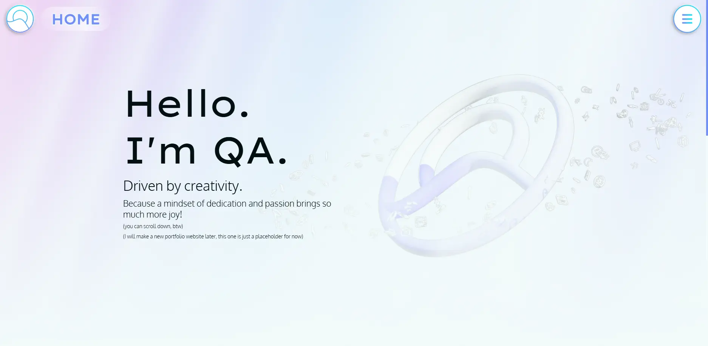
Despite I think it's pretty cool and all, I found a couple of nasty things about the website.
One, it is not mobile friendly.
Back then, I was waaaaay too focused on designing it on desktop,
causing past me to forgot about the mobile users.
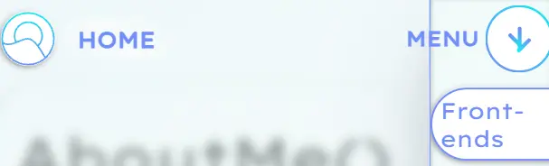
Two, it is not direct and not detailed enough.
But, what's that mean?
For example, the art page where I showcase my art, I
only give a description on the art itself, but never about how I manage to have the final product (like
what's the modelling process, did I follow the pipeline, stuff like that).
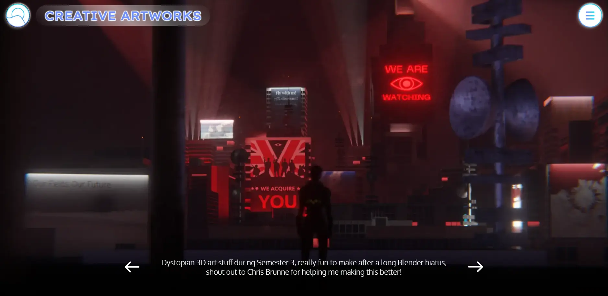
I, generally hate it, and reiterating my old code would drive me crazy!
So... out of pure spite, I decided to start making a completely new portfolio website that can be maintained
easily.
Tiny research
I started with some quick research and put my findings together. The keyword here is ART Portfolio. I checked out a couple of portfolios on the internet, my favourites would be from Evan Nave and David Oneacre.
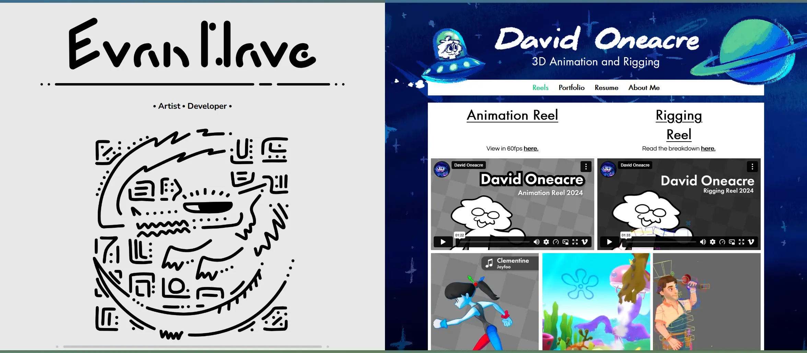
Once done with the scouting, I found out that in an Art Portfolio, or a work portfolio in general, should
contain these things:
Who are you?
What is your final product?
How did you make your final product and why?
What's your contact information?
Even when in an Article, or a Blog, that should have the context of the product, the challenges I have
faced, the outcome after facing the challenge, and the result... to show if my product actually solve a
design challenge!
But what's my final product?
Well I can use Blender, I can make Arts using Blender, I do tried to learn how to draw things, and I make
Games, and Music, and a bit of photography, and a bit of Web Development, hmm...
I can showcase my Arts, Photos, Games, Websites, and Music!
With these information I got, time for prototyping!
Prototype
To prototype, I use Figma as the main software to create the overall layout first, aka, wireframes! This is my first:
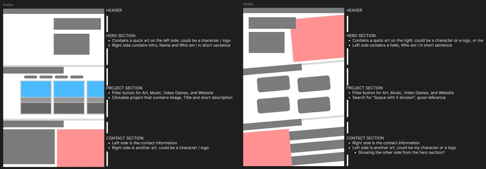
I found this kinda off, it felt a bit too generic for me. Maybe because literally all Portfolio Website usually have this kind of layout, and it doesn't really representing me much. So, I tried my best to make another iteration!
I tried to go for something like Pinterest, where I don't want any nonsense when the user opens my
portfolio, I want to showcase my cool stuff first, and then if they're impressed, they can look deeper on
who I am.
Additionally, the Disc rotating on the right side seems to be the most impressive instead of a grid layout
like Pinterest, I guess it is also a way to show the cover art of that music I made too!
And as you can see, it is heavily inspired by the pause menu screen of
Unbeatable, good game btw go play super fun.
Based on the Lo-fi Prototype, I can now make a Hi-fi version of it:
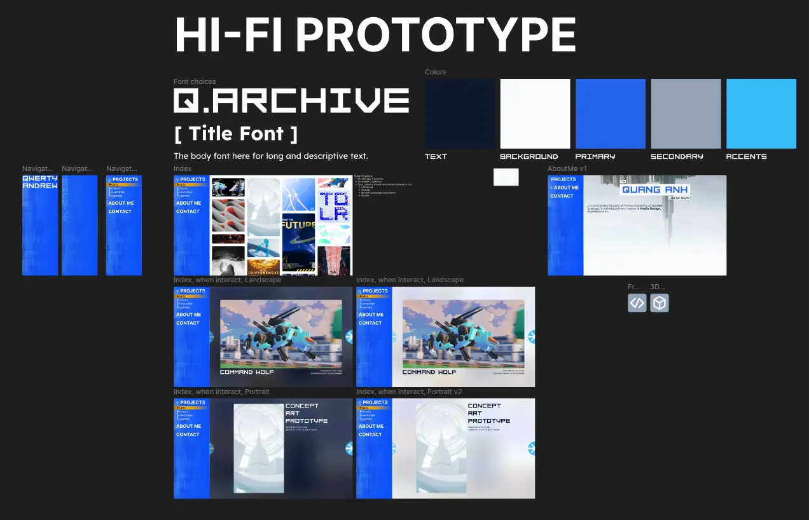
I want to go for the Mirror's Edge UI vibe, which is why the side bar kinda looks like the pause screen UI of that game.
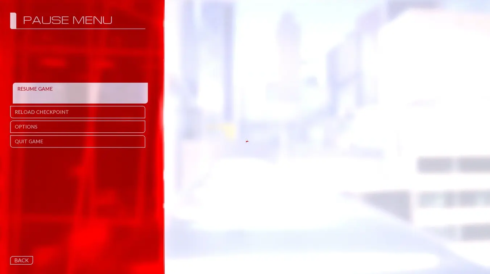
Development
"Woah woah woah, you haven't finish the Hi-fi prototype yet, why are you switching to coding the
site?"
Well... I have to admit, this prototype I create was LAST YEAR (probably around summer 2025), and because of
university work, I don't have time to continue. And because I need to get an internship, plus my parents
were pretty rushed, I must start coding the website, and then fix them later on in the future.
For the sake of simplicity, I will go for the Vanilla route. Yes, I know it might sounds like the
torturious way to create a website, and yes I know it is good to use Static Site Generator, like Eleventy! But for the time being, HTML CSS and JavaScript is already
enough for me to make my portfolio website.
I will keep Eleventy in mind tho! I heard SSG can make portfolio a bit easier to manage :3
Visual Studio Code is my main environment to code the portfolio website, just like before. And for the logic
side of things, I will ask a LLM for some help.
For organisation sake, I divided the files into folder like this:
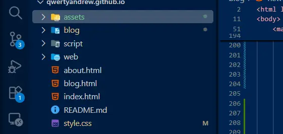
Assets folder contains pretty much all assets in the website, like images, sounds, videos, and even JSON
data (We will get back to this later).
Blog folder contains all blog page, including this one, because each blog page is a different HTML, hence a
folder would be awesome.
Script folder contains all JavaScript files, that should be self-explanatory.
Web folder contains all other website that I created during my semester. Because I want to showcase my
front-end development skills, why not include some of my old projects in.
I started with the navigation bar, and this is the result:
It also works when you use the previous page functionality from your browser too, super neat.
Next up is the Pinterest grid. The layout used by them apparently is called a masonry layout (also
known as a waterfall layout). So, the idea is unlike a bento box grid, it has the same column width, but
various height! Because the height matters, I divided the image or video into 3 category:
- Portrait
- Landscape
- Square
To add images, I do not want to add them manually in HTML, I will use JSON! I want the JSON data to have
properties of the image, something like Metadata.
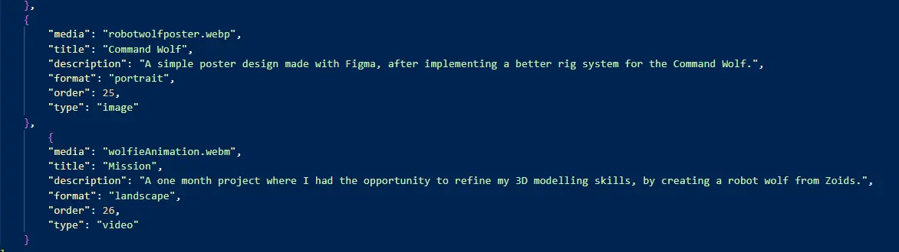
Using the art JSON data, I can let JavaScript implement the images inside the HTML, without me manually adding the img tag, and applying with the masonry layout, this is the result:
Those Metadata contains Title and Description too, which can be use for displaying the information of my images! I also made it mobile friendly at start, so I don't have to worry about it in the future.
This style basically applies to Photo section as well, because technically it is a gallery.
For the game and website section, I still use a masonry layout, but the bottom of the image contains link
that can be useful, since those are projects, soooo it looks like this:
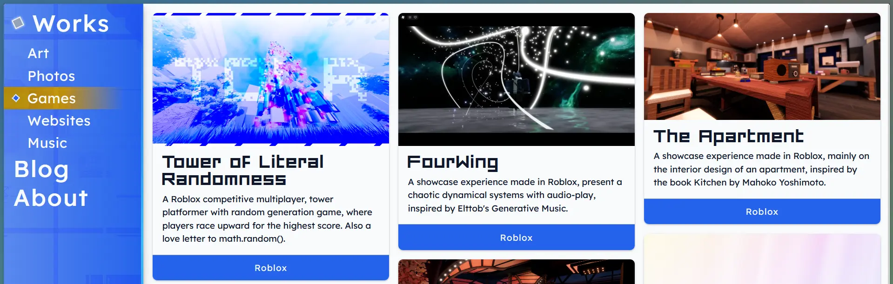
Now for the fun part, Music section! Concept the same as before, using JSON to fill up the data so I
don't have to.
I want to have a DVD disc spinning on the right side, and the left side is a selection of music I made. I
tried to simulate how DVD disc looks, it's pretty hard but I think I got it right.
Initially I added those kind of lines that exist on a vinyl, but according to my friend's feedback, that is not how CD works so I must make it smooth.
This is because DVD can be read using lasers, while vinyl can be read using a needle (hence the groove is
needed).
I think that's pretty much all the interesting things that I want to yap about, the rest of it is just
boring HTML CSS, like the About me page and this blog page I'm writing right now.
Result
You are looking at the final result right now! Well, since I'm writing this blog I missed quite a couple of stuff, but the MVP (Minimal Viable Product) is there so yippee!
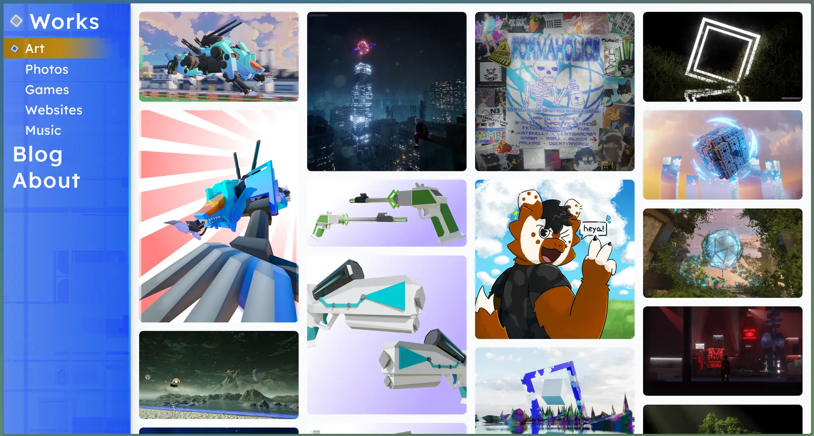
Currently as I'm writing, the website hosted using GitPage system from Github, because it is free. But, I'm thinking about getting a web domain soon... having a web domain is nice and also the subscription isn't so bad for a year.
Additionally, having the code on Github helps with version control, and also for me to create issues for future me to handle.
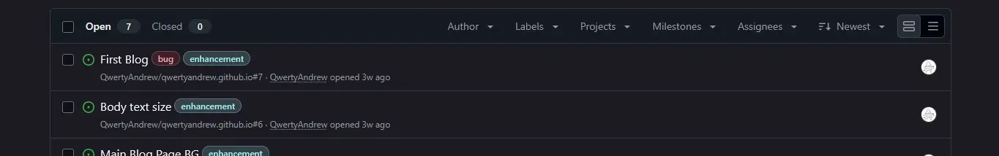
Thoughts
Got the website done and in a MVP state was crazy, and I'm proud that I managed to turn my concept into something personal. Even though this is a website that will be sent to companies (I need a job after all), it is a way to express my creativity too. This website is like a home and I managed to build it from scratch, without frameworks or presets!
I really, really, reeeaaallyyyy love the music page so much. It is something I somehow did with a touch of hyperfixation, and I love it.
On the downside... There are a lot of things that I can improve in terms of the UX side of things, such as micro-animation (which was use a lot in my previous portfolio), and micro-decoration. Additionally, design principle would be cool to make the website visually yummy.
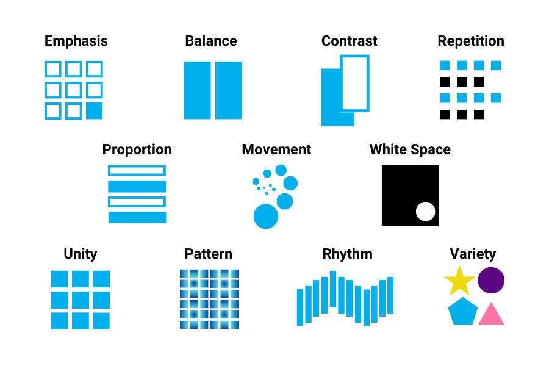
Those are the small fixes/patches that I will do in the future, but for now as it is the MVP, I am very happy on this. It is a hard challenge (I have to admit, I don't think I am good at front-end development, like I'm going Vanilla and that's bad xd), but I overcomed and learnt a lot along the way.
For the readers, I hope this is inspiring for you to make your own website, but an advice I can give to you would be plan and playtest.
One unfortunate mistake that I did was going to the development phase, without testing my Hi-fi prototype. Making a prototype can be fast and, well, keyword is prototype so you expect to have a lot of iteration. But due to time constraints, I had to. It would be better for me to show the prototype to my professors and get feedback from there, hell, even ask companies to review my prototype too. So... ask! Even when the prototype is hot garbage, feedback is better than nothing.
So ya, that's about it, fun project! Now go make your own website, it's very fun, trust me :3